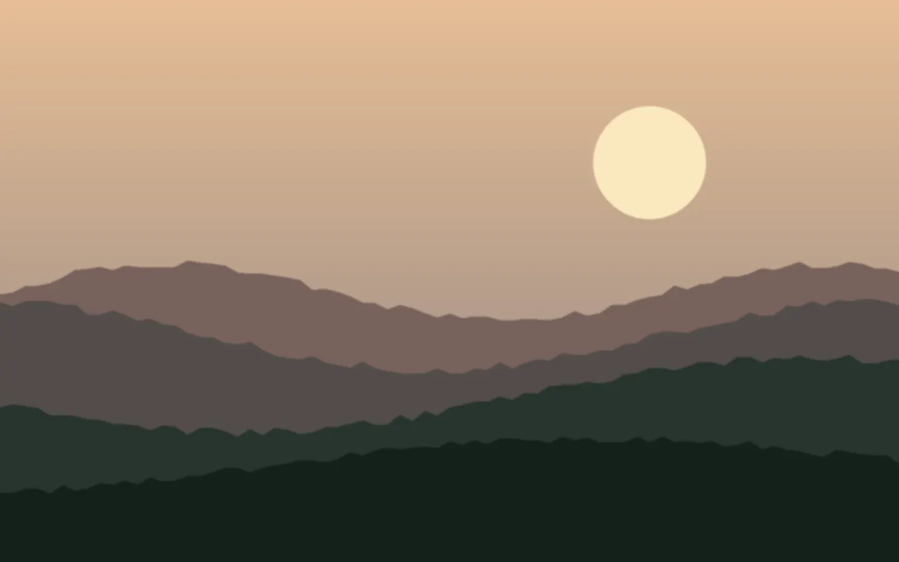

A cena se fecha enquanto você rola
Ao fim da rolagem, a foto vira um cartão no meio da página.
Fim do trecho fixo.
A altura da seção (400vh) é a duração da cena.

Ao fim da rolagem, a foto vira um cartão no meio da página.
A altura da seção (400vh) é a duração da cena.